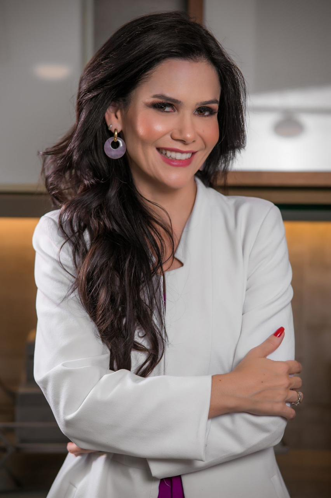

stethoscope EndocrinologiaDra. Tassiane Alvarenga
Endocrinologista • USP
Referência em obesidade, certificada em Medicina do Estilo de Vida pelo IBLM. Idealizadora do projeto Médicos na Cozinha, pioneiro em medicina culinária no Brasil.
Obesidade
MEV
Medicina Culinária